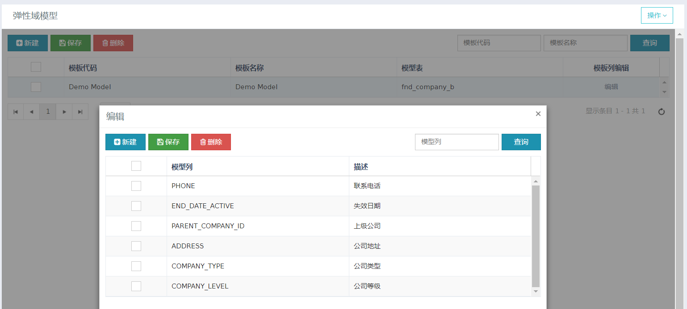
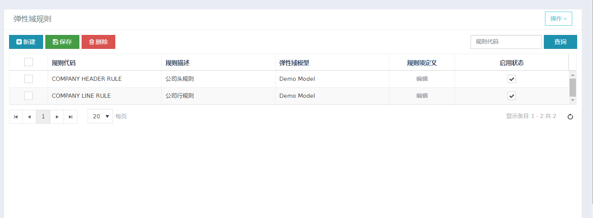
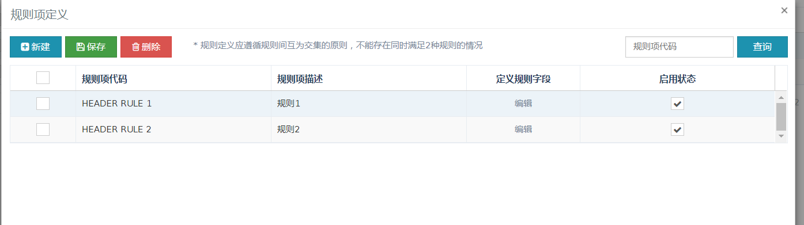
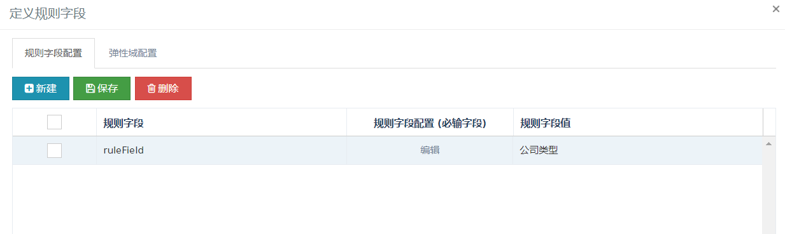
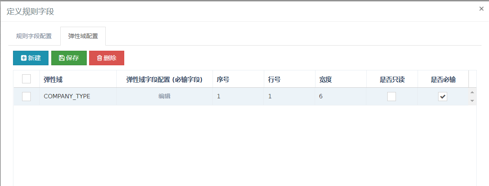
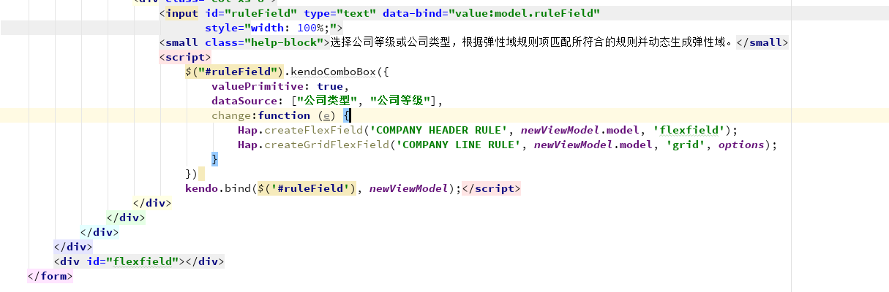
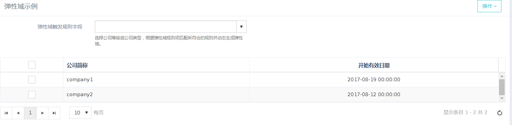
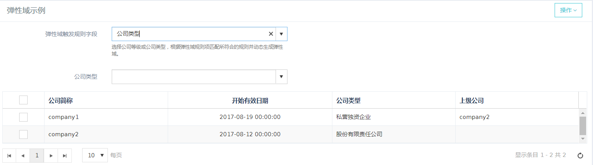

弹性域
项目中经常有如下需求，根据某个字段的值附加显示属性字段，类似EBS中的描述性弹性域功能。
1. 功能简介：
- 支持form表单结构的弹性域。
- 支持grid结构弹性域
- 可以生成文本框，日期框，多语言框，数字框，LOV框，下拉框。
2. 使用说明：
假设如下场景：当维护公司表时用户想根据ruleField字段来创建弹性域，当该字段值为公司类型时在form和grid中创建COMPANY_TYPE字段，当该字段值为公司等级时在form中创建COMPANY_LEVEL字段。可以通过如下步骤配置弹性域实现。
2.1 配置弹性域模型
首先我们需要将公司表配置为弹性域模型并设置其中相关列为弹性域列（需在页面动态展示的列）。如下图所示：

2.2 配置弹性域规则
2.2.1 创建规则
然后我们需要为弹性域模型创建一条规则。demo为公司模型创建了2条规则项一条用于form弹性域 一条作用于grid弹性域。规则中包含多个规则项，用户可根据规则代码进行规则匹配，通过匹配到的符合条件一条规则项来进行弹性域渲染。

2.2.2 规则项定义
示例为规则集COMPANY HEADER RULE 创建了2条规则，及用户通过规则代码会对这些规则进行匹配选取符合条件的一条规则。故在后面具体定义规则的时候需遵循条件互斥的原则及不能出现同时满足多条规则的情况。
2.2.3 定义规则字段
如图为HEADER RULE 1配置规则及当ruleField（这里只是举例，大部分情况应是公司表中的字段如公司等级）等于公司类型 时触发规则。编辑按钮为grid中定义规则字段值的输入框类型（支持文本框，数字框体，下拉框，LOV框，多语言框，日期框）

demo中当匹配到这条规则后会渲染一条弹性域列 COMPANY_TYPE，字段解释如下：
弹性域字段配置定义输入框在页面渲染的样式（支持文本框，数字框体，下拉框，LOV框，多语言框，日期框）。
序号越小输入框位置越靠前。
行号为渲染form时所渲染的行位置。渲染grid时该字段无意义。
宽度当渲染form时一行总体宽度应为12。

2.3 在页面配置启用弹性域
HAP.createFlexField()为form中创建弹性域函数。其中所需参数：需匹配的规则代码，viewModel，弹性域生成位置。
HAP.createGridFlexField()为grid中创建弹性域函数。所需参数同上 option为grid默认列，在grid后添加：
var grid = $("#grid").data("kendoGrid");
var options = grid.getOptions().columns;

由图可以看出弹性域原理为当viewModel中的字段和规则匹配 当wiewModel中的ruleField等于公司类型时触发规则HEADER RULE 1在页面flexfield元素中渲染COMPANY_TYPE弹性域字段。
3. 功能展示
进入弹性域示例界面

选择公司类型之后页面如图所示： 可以看到动态生成了公司类型的form和grid
